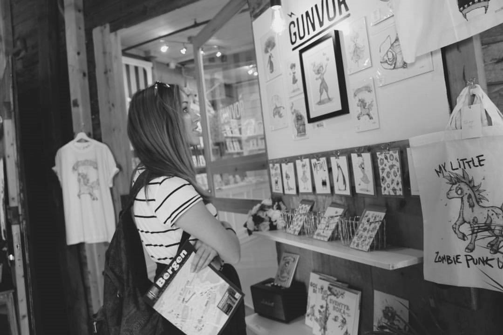
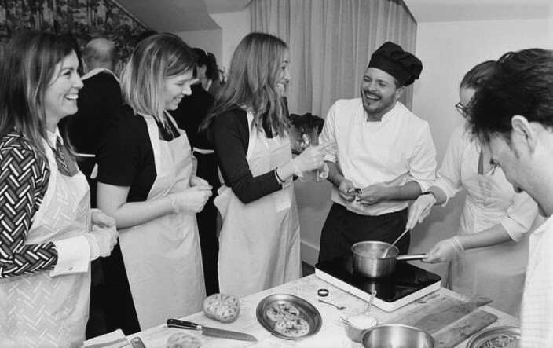

DIANDRA MÁRQUEZ ROMERO
Welcome to my first HTML profile!
My name is Diandra, and I am an enthusiastic and dedicated Computer Science student, with a professional background in Finance, seeking to fast track my entry into the ICT sector. My interest and determination to develop professionally within a technical field has led me to undertake a Computer Science Degree whilst simultaneously working full time to shift career paths and become a Software Developer.
KEY SKILLS:
- Applications: Microsoft Office Suite (Word, Excel, PowerPoint, Outlook), Adobe Illustrator, Adobe InDesign
- Programming Languages: InDesign, Illustrator, C, Java, JavaScript, XML
- Operating Systems: Windows 7, Windows 8, Windows Vista, Windows 10
- Administration and organizational Skills
- Languages: English, Spanish, Basque
| Soft Skills | Teamwork | Time management | Flexibility | Creativity |
|---|---|---|---|---|
| Hard Skills | Banking | Analysis | HTML5 & CSS | Microsoft Excel |
INTERESTS:
- Social Work: Working with Grubs Up Homeless Services soup run, as a volunteer supporting and feeding Dublin's Homeless (08/2021 – Present)
- Drawing, painting, and photography:Using Copic Markers, Acrylics, oil paint or a simple pen I can create a portrait, landscape, or a colourful urban sketcher.

